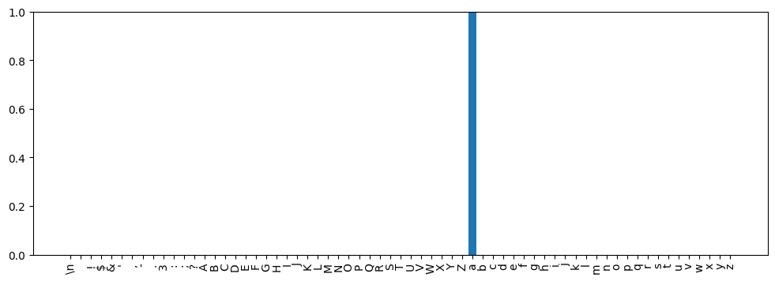

environment = get_environment()
print(f"environment is {environment.name}")environment is paperspaceenvironment = get_environment()
print(f"environment is {environment.name}")environment is paperspacedevice = 'cuda' if torch.cuda.is_available() else 'cpu'
ts = TinyShakespeareDataSet(cache_file=environment.code_root / 'nbs/artifacts/input.txt')
m, tokenizer = create_model_and_tokenizer(
saved_model_filename=environment.code_root / 'nbs/artifacts/shakespeare-20231112.pt',
dataset=ts,
device=device,
)
_, val_data = split_text_dataset(ts.text, tokenizer, train_pct=0.9, device=device)
encoding_helpers = EncodingHelpers(tokenizer, device)
accessors = TransformerAccessors(m, device)print(f"device is {device}")device is cudaAt any point in the transformer after tokens have been embedded, we can think of the remainder of the pipeline as a function that transforms from embedding space (\(\mathbb{R}^{384}\) since n_embed = 384) to logit space (\(\mathbb{R}^{65}\) vocab_size=65). For a given token, say the letter a, we might ask: at this point in the pipeline, what embedding will produce output logits that result in a probability very close to 1 for this token? In other words, what embedding, if provided as input at this point, will result in the transformer predicting the given token as the next token?
I suspect this is difficult to determine analytically, especially for earlier parts of the pipeline where the input embedding has to go through many transformer blocks before output logits are computed. But, we can actually learn the embeddings that result in the right kind of logits.
I say embeddings - plural - because it seems there isn’t just one unique embedding for each token. Likely, there is some subspace of the full embeddings space, \(\mathbb{R}^{384}\), that corresponds to specific tokens being predicted. While I don’t know of a way to find the bounds of this space directly, we can learn several embeddings within the space and then work out a good enough approximation of the space.
To do this, we set up a typical deep-learning problem: * The portion of the transformer we’re interested in is fixed; the embeddings input into it are the parameters we’re optimizing and they start with random initialization. * We do a forward pass, computing the logits from the embeddings we have. * We compute negative log likelihood loss relative to the token we’re trying to learn embeddings for. * We do a backward pass, adjusting the values of the embeddings according to the gradients.
It works remarkably well.
def learn_embedding_for_char(
target_char: str,
embedding_to_logits: Callable[[torch.Tensor], torch.Tensor],
n_embeddings_to_learn: int = 1,
learning_rate: float = 3e-4,
minimum_loss: float = 1e-4,
max_iters: int = 50000,
device: str = device,
) -> torch.Tensor:
"""Given a character, learns the embedding that,
when given as input to the `embedding_to_logits`
function, produces the logits select that character
with probability almost 1."""
assert len(target_char) == 1
target = torch.tensor(tokenizer.encode(target_char), device=device)
lsfm = nn.LogSoftmax(dim=-1)
lsfm.to(device)
x = torch.nn.Parameter(
torch.randn(n_embeddings_to_learn, 1, n_embed, device=device),
requires_grad=True,
)
optimizer = torch.optim.AdamW([x], lr=learning_rate)
eval_iters = max_iters // 10
print(f"Optimizing embedding for {repr(target_char)}")
for step in range(max_iters):
logits = embedding_to_logits(x)
B, T, C = logits.shape
yhat = lsfm(logits.view(B * T, C))
loss = F.nll_loss(yhat, target.expand(n_embeddings_to_learn))
if loss < minimum_loss:
print(f"ending training at step {step:>5}: loss {loss.item():.6f}")
break
if step % eval_iters == 0:
print(f"step {step:>5}: loss {loss.item():.6f}")
optimizer.zero_grad(set_to_none=True)
loss.backward()
optimizer.step()
return x.data.detach(), lossDefine a function that encapsulate the final output head of the transformer, after all the blocks (basically, a layer norm followed by a linear layer going from embedding space to token space):
# Similar to TransformerAccessors.logits_from_embedding but does not
# detach the result from the computation graph.
def transformer_output_head_function(m: TransformerLanguageModel) -> Callable[[torch.Tensor], torch.Tensor]:
ln_f = nn.LayerNorm(n_embed)
lm_head = nn.Linear(n_embed, tokenizer.vocab_size)
ln_f.load_state_dict(m.ln_f.state_dict())
lm_head.load_state_dict(m.lm_head.state_dict())
ln_f.to(device)
lm_head.to(device)
return lambda x: lm_head(ln_f(x))Now we can use this to learn, e.g., an embedding that, at the very end of the transformer, after all the blocks, is likely to produce a next token probability for a of nearly 1.
torch.manual_seed(42)
emb_a, _ = learn_embedding_for_char('a', transformer_output_head_function(m))Optimizing embedding for 'a'
step 0: loss 2.809722
step 5000: loss 0.009828
step 10000: loss 0.000751
ending training at step 14316: loss 0.000100We can test this, by sending the resulting embedding through the output head and plotting the next token probabilities:
logits = LogitsWrapper(accessors.logits_from_embedding(unsqueeze_emb(emb_a)), tokenizer)
logits.plot_probs()
That was just one possible embedding that selects a. We can learn others. The following code snippet will learn 100 such embeddings.
# Try learning more than one embedding
torch.manual_seed(42)
multi_emb_a, _ = learn_embedding_for_char(
"a", transformer_output_head_function(m), n_embeddings_to_learn=100
)Optimizing embedding for 'a'
step 0: loss 4.480039
step 5000: loss 0.014915
step 10000: loss 0.001181
step 15000: loss 0.000119
ending training at step 15389: loss 0.000100multi_emb_a.shapetorch.Size([100, 1, 384])We can convince ourselves that these are sufficiently varied by examining some stats:
def multi_emb_stats(multi_embs: torch.Tensor):
norms = torch.norm(multi_embs[:, 0, :], dim=-1)
print(f"norms: mean {norms.mean().item():.6f}, std {norms.std().item():.6f}")
print(f"norms: min {norms.min().item():.6f}, max {norms.max().item():.6f}")
norm_diffs = []
for i in range(multi_embs.shape[0]):
for j in range(multi_embs.shape[0]):
if i != j:
norm_diffs.append(torch.norm(multi_embs[i, 0, :] - multi_embs[j, 0, :]))
norm_diffs = torch.tensor(norm_diffs)
print(f"norm diffs: mean {norm_diffs.mean().item():.6f}, std {norm_diffs.std().item():.6f}")
print(f"norm diffs: min {norm_diffs.min().item():.6f}, max {norm_diffs.max().item():.6f}")multi_emb_stats(multi_emb_a)norms: mean 16.764254, std 0.759987
norms: min 15.078418, max 18.306231
norm diffs: mean 16.599855, std 0.760862
norm diffs: min 13.795146, max 19.167126The norms of the embeddings range from about 15 to about 18, with a mean of about 16.7. Then if we compute the differences between all the learned embeddings and take the norms of those differences, we see that they are quite large: the differences range from 13.8 to about 19, with a mean of 16.6. If we’d somehow learned 100 nearly identical vectors, the differences would be a lot smaller.
Now we’ll define a function that implements the portion of a the transformer pipeline from a given block onwards. E.g. If called with n=3, this would implement blocks index 3, 4, and 5, plus the transformer output head.
# Similar to TransformerAccessors.run_model_from_block_n but does not
# detach the result from the computation graph.
def block_n_on_function(m: TransformerLanguageModel, n: int) -> Callable[[torch.Tensor], torch.Tensor]:
assert n >= 0 and n < n_layer, "n must be in [0, n_layer)"
blocks, _ = zip(
*[
accessors.copy_block_from_model(block_idx=i)
for i in range(n, n_layer)
]
)
blocks_module = torch.nn.Sequential(*blocks)
output_head = transformer_output_head_function(m)
return lambda x: output_head(blocks_module(x))We can now learn 100 embeddings for the letter a, from block index 5 (the last block) in transformer.
torch.manual_seed(42)
multi_emb_a_5, _ = learn_embedding_for_char('a', block_n_on_function(m, n=5), n_embeddings_to_learn=100)Optimizing embedding for 'a'
step 0: loss 4.540399
step 5000: loss 0.003825
step 10000: loss 0.000321
ending training at step 12689: loss 0.000100multi_emb_stats(multi_emb_a_5)norms: mean 17.498230, std 0.640826
norms: min 15.787105, max 19.508923
norm diffs: mean 23.514679, std 0.885002
norm diffs: min 20.520039, max 27.281914These show even more variation than the ones learned for the output head alone.
As a spot check, let’s plot an arbitrary one of these:
# Try an arbitrary embedding and plot it.
logits = LogitsWrapper(block_n_on_function(m, n=5)(unsqueeze_emb(multi_emb_a_5[22, 0, :])).detach(), tokenizer)
logits.plot_probs()
It produces a with probability nearly 1, as we’d expect. I spot checked with several more examples and they all looked right.
Next, we can learn embeddings from an earlier point, say from block index 1 on:
torch.manual_seed(42)
multi_emb_a_1, _ = learn_embedding_for_char('a', block_n_on_function(m, n=1), n_embeddings_to_learn=100)Optimizing embedding for 'a'
step 0: loss 3.682070
step 5000: loss 0.003850
step 10000: loss 0.000303
ending training at step 12545: loss 0.000100multi_emb_stats(multi_emb_a_1)norms: mean 17.507275, std 0.661216
norms: min 15.955662, max 18.931648
norm diffs: mean 24.441858, std 0.949635
norm diffs: min 21.217833, max 27.614788Even more variation now. Again, let’s spot check:
# Try an arbitrary embedding and plot it.
logits = LogitsWrapper(block_n_on_function(m, n=1)(unsqueeze_emb(multi_emb_a_1[63, 0, :])).detach(), tokenizer)
logits.plot_probs()
With this in place, we can now learn embeddings for all the tokens and save them for later use.
results_folder = environment.data_root / 'learned_embeddings'
results_folder.mkdir(exist_ok=True)filename_for_token = FilenameForToken(tokenizer)n_embeddings_to_learn = 100Learn embeddings for just the output head:
embedding_to_logits_function = transformer_output_head_function(m)
sub_dir = results_folder / f'no_blocks'
sub_dir.mkdir(exist_ok=True)for target_char in tqdm(tokenizer.chars):
multi_embs, _ = learn_embedding_for_char(
target_char, embedding_to_logits_function, n_embeddings_to_learn=n_embeddings_to_learn
)
torch.save(multi_embs, sub_dir / f'{filename_for_token(target_char)}.pt')Optimizing embedding for '\n'
step 0: loss 4.873875
step 5000: loss 0.014350
step 10000: loss 0.001145
step 15000: loss 0.000115
ending training at step 15317: loss 0.000100
Optimizing embedding for ' '
step 0: loss 4.264826
step 5000: loss 0.016041
step 10000: loss 0.001354
step 15000: loss 0.000146
ending training at step 15895: loss 0.000100
Optimizing embedding for '!'
step 0: loss 4.792295
step 5000: loss 0.012945
step 10000: loss 0.000995
ending training at step 14904: loss 0.000100
Optimizing embedding for '$'
step 0: loss 5.333682
step 5000: loss 0.057611
step 10000: loss 0.005992
step 15000: loss 0.001061
step 20000: loss 0.000405
step 25000: loss 0.000354
step 30000: loss 0.000354
step 35000: loss 0.000354
step 40000: loss 0.000354
step 45000: loss 0.000354
Optimizing embedding for '&'
step 0: loss 5.297050
step 5000: loss 0.059776
step 10000: loss 0.006204
step 15000: loss 0.001161
step 20000: loss 0.000509
step 25000: loss 0.000470
step 30000: loss 0.000469
step 35000: loss 0.000469
step 40000: loss 0.000469
step 45000: loss 0.000469
Optimizing embedding for "'"
step 0: loss 4.427784
step 5000: loss 0.009131
step 10000: loss 0.000668
ending training at step 13922: loss 0.000100
Optimizing embedding for ','
step 0: loss 4.773814
step 5000: loss 0.026466
step 10000: loss 0.002318
step 15000: loss 0.000273
ending training at step 17611: loss 0.000100
Optimizing embedding for '-'
step 0: loss 4.811676
step 5000: loss 0.010475
step 10000: loss 0.000778
ending training at step 14270: loss 0.000100
Optimizing embedding for '.'
step 0: loss 4.674299
step 5000: loss 0.027865
step 10000: loss 0.002514
step 15000: loss 0.000314
ending training at step 18179: loss 0.000100
Optimizing embedding for '3'
step 0: loss 5.365812
step 5000: loss 0.034804
step 10000: loss 0.002992
step 15000: loss 0.000367
ending training at step 18638: loss 0.000100
Optimizing embedding for ':'
step 0: loss 4.741449
step 5000: loss 0.012953
step 10000: loss 0.001016
ending training at step 14978: loss 0.000100
Optimizing embedding for ';'
step 0: loss 4.844121
step 5000: loss 0.027275
step 10000: loss 0.002482
step 15000: loss 0.000309
ending training at step 18092: loss 0.000100
Optimizing embedding for '?'
step 0: loss 5.005649
step 5000: loss 0.012930
step 10000: loss 0.000989
ending training at step 14877: loss 0.000100
Optimizing embedding for 'A'
step 0: loss 5.113842
step 5000: loss 0.015388
step 10000: loss 0.001204
step 15000: loss 0.000119
ending training at step 15387: loss 0.000100
Optimizing embedding for 'B'
step 0: loss 5.215371
step 5000: loss 0.017506
step 10000: loss 0.001359
step 15000: loss 0.000136
ending training at step 15706: loss 0.000100
Optimizing embedding for 'C'
step 0: loss 4.807229
step 5000: loss 0.014966
step 10000: loss 0.001172
step 15000: loss 0.000117
ending training at step 15346: loss 0.000100
Optimizing embedding for 'D'
step 0: loss 5.175806
step 5000: loss 0.015056
step 10000: loss 0.001147
step 15000: loss 0.000111
ending training at step 15225: loss 0.000100
Optimizing embedding for 'E'
step 0: loss 4.931046
step 5000: loss 0.012371
step 10000: loss 0.000935
ending training at step 14723: loss 0.000100
Optimizing embedding for 'F'
step 0: loss 5.209412
step 5000: loss 0.017060
step 10000: loss 0.001304
step 15000: loss 0.000128
ending training at step 15544: loss 0.000100
Optimizing embedding for 'G'
step 0: loss 5.248595
step 5000: loss 0.013182
step 10000: loss 0.000999
ending training at step 14870: loss 0.000100
Optimizing embedding for 'H'
step 0: loss 5.152567
step 5000: loss 0.017908
step 10000: loss 0.001409
step 15000: loss 0.000143
ending training at step 15819: loss 0.000100
Optimizing embedding for 'I'
step 0: loss 4.950461
step 5000: loss 0.014191
step 10000: loss 0.001090
step 15000: loss 0.000105
ending training at step 15105: loss 0.000100
Optimizing embedding for 'J'
step 0: loss 5.064102
step 5000: loss 0.022407
step 10000: loss 0.001807
step 15000: loss 0.000198
ending training at step 16662: loss 0.000100
Optimizing embedding for 'K'
step 0: loss 4.987291
step 5000: loss 0.014709
step 10000: loss 0.001141
step 15000: loss 0.000112
ending training at step 15245: loss 0.000100
Optimizing embedding for 'L'
step 0: loss 5.183823
step 5000: loss 0.014404
step 10000: loss 0.001087
step 15000: loss 0.000104
ending training at step 15082: loss 0.000100
Optimizing embedding for 'M'
step 0: loss 5.154094
step 5000: loss 0.017238
step 10000: loss 0.001342
step 15000: loss 0.000134
ending training at step 15652: loss 0.000100
Optimizing embedding for 'N'
step 0: loss 5.410346
step 5000: loss 0.012436
step 10000: loss 0.000936
ending training at step 14710: loss 0.000100
Optimizing embedding for 'O'
step 0: loss 4.898608
step 5000: loss 0.011437
step 10000: loss 0.000870
ending training at step 14554: loss 0.000100
Optimizing embedding for 'P'
step 0: loss 4.961571
step 5000: loss 0.017236
step 10000: loss 0.001346
step 15000: loss 0.000136
ending training at step 15711: loss 0.000100
Optimizing embedding for 'Q'
step 0: loss 5.146482
step 5000: loss 0.033291
step 10000: loss 0.002937
step 15000: loss 0.000374
ending training at step 18847: loss 0.000100
Optimizing embedding for 'R'
step 0: loss 5.044732
step 5000: loss 0.012409
step 10000: loss 0.000931
ending training at step 14697: loss 0.000100
Optimizing embedding for 'S'
step 0: loss 4.984651
step 5000: loss 0.014172
step 10000: loss 0.001097
step 15000: loss 0.000107
ending training at step 15141: loss 0.000100
Optimizing embedding for 'T'
step 0: loss 5.201972
step 5000: loss 0.017122
step 10000: loss 0.001325
step 15000: loss 0.000131
ending training at step 15602: loss 0.000100
Optimizing embedding for 'U'
step 0: loss 5.261983
step 5000: loss 0.011479
step 10000: loss 0.000862
ending training at step 14514: loss 0.000100
Optimizing embedding for 'V'
step 0: loss 5.383446
step 5000: loss 0.014711
step 10000: loss 0.001108
step 15000: loss 0.000105
ending training at step 15112: loss 0.000100
Optimizing embedding for 'W'
step 0: loss 5.273647
step 5000: loss 0.021252
step 10000: loss 0.001691
step 15000: loss 0.000176
ending training at step 16322: loss 0.000100
Optimizing embedding for 'X'
step 0: loss 5.354009
step 5000: loss 0.015729
step 10000: loss 0.001203
step 15000: loss 0.000117
ending training at step 15351: loss 0.000100
Optimizing embedding for 'Y'
step 0: loss 5.102457
step 5000: loss 0.012912
step 10000: loss 0.000968
ending training at step 14792: loss 0.000100
Optimizing embedding for 'Z'
step 0: loss 5.203928
step 5000: loss 0.015488
step 10000: loss 0.001193
step 15000: loss 0.000116
ending training at step 15327: loss 0.000100
Optimizing embedding for 'a'
step 0: loss 4.273046
step 5000: loss 0.014312
step 10000: loss 0.001138
step 15000: loss 0.000115
ending training at step 15308: loss 0.000100
Optimizing embedding for 'b'
step 0: loss 4.682340
step 5000: loss 0.013746
step 10000: loss 0.001014
ending training at step 14867: loss 0.000100
Optimizing embedding for 'c'
step 0: loss 4.690848
step 5000: loss 0.011992
step 10000: loss 0.000885
ending training at step 14568: loss 0.000100
Optimizing embedding for 'd'
step 0: loss 4.549020
step 5000: loss 0.011544
step 10000: loss 0.000855
ending training at step 14477: loss 0.000100
Optimizing embedding for 'e'
step 0: loss 4.382761
step 5000: loss 0.011802
step 10000: loss 0.000924
ending training at step 14748: loss 0.000100
Optimizing embedding for 'f'
step 0: loss 4.842515
step 5000: loss 0.013852
step 10000: loss 0.001037
ending training at step 14940: loss 0.000100
Optimizing embedding for 'g'
step 0: loss 4.529458
step 5000: loss 0.010083
step 10000: loss 0.000754
ending training at step 14212: loss 0.000100
Optimizing embedding for 'h'
step 0: loss 4.441307
step 5000: loss 0.013397
step 10000: loss 0.001038
step 15000: loss 0.000101
ending training at step 15032: loss 0.000100
Optimizing embedding for 'i'
step 0: loss 4.120494
step 5000: loss 0.012618
step 10000: loss 0.000995
ending training at step 14945: loss 0.000100
Optimizing embedding for 'j'
step 0: loss 4.989840
step 5000: loss 0.014413
step 10000: loss 0.001074
step 15000: loss 0.000101
ending training at step 15031: loss 0.000100
Optimizing embedding for 'k'
step 0: loss 4.854855
step 5000: loss 0.009786
step 10000: loss 0.000723
ending training at step 14104: loss 0.000100
Optimizing embedding for 'l'
step 0: loss 4.350724
step 5000: loss 0.011370
step 10000: loss 0.000853
ending training at step 14497: loss 0.000100
Optimizing embedding for 'm'
step 0: loss 4.619439
step 5000: loss 0.012355
step 10000: loss 0.000939
ending training at step 14752: loss 0.000100
Optimizing embedding for 'n'
step 0: loss 4.462899
step 5000: loss 0.012318
step 10000: loss 0.000935
ending training at step 14727: loss 0.000100
Optimizing embedding for 'o'
step 0: loss 4.410997
step 5000: loss 0.014322
step 10000: loss 0.001139
step 15000: loss 0.000113
ending training at step 15282: loss 0.000100
Optimizing embedding for 'p'
step 0: loss 4.570235
step 5000: loss 0.011398
step 10000: loss 0.000837
ending training at step 14423: loss 0.000100
Optimizing embedding for 'q'
step 0: loss 5.127600
step 5000: loss 0.012552
step 10000: loss 0.000936
ending training at step 14693: loss 0.000100
Optimizing embedding for 'r'
step 0: loss 4.435355
step 5000: loss 0.011171
step 10000: loss 0.000845
ending training at step 14497: loss 0.000100
Optimizing embedding for 's'
step 0: loss 4.184333
step 5000: loss 0.011847
step 10000: loss 0.000928
ending training at step 14775: loss 0.000100
Optimizing embedding for 't'
step 0: loss 4.536841
step 5000: loss 0.013432
step 10000: loss 0.001021
ending training at step 14953: loss 0.000100
Optimizing embedding for 'u'
step 0: loss 4.413103
step 5000: loss 0.010647
step 10000: loss 0.000790
ending training at step 14312: loss 0.000100
Optimizing embedding for 'v'
step 0: loss 4.691413
step 5000: loss 0.011501
step 10000: loss 0.000860
ending training at step 14509: loss 0.000100
Optimizing embedding for 'w'
step 0: loss 4.491944
step 5000: loss 0.013307
step 10000: loss 0.000995
ending training at step 14859: loss 0.000100
Optimizing embedding for 'x'
step 0: loss 4.986167
step 5000: loss 0.011315
step 10000: loss 0.000835
ending training at step 14424: loss 0.000100
Optimizing embedding for 'y'
step 0: loss 4.736977
step 5000: loss 0.011138
step 10000: loss 0.000828
ending training at step 14408: loss 0.000100
Optimizing embedding for 'z'
step 0: loss 4.985116
step 5000: loss 0.009728
step 10000: loss 0.000710
ending training at step 14037: loss 0.000100Learn embeddings from the last block (block index 5 onwards):
block_n_on = 5
embedding_to_logits_function = block_n_on_function(m, n=block_n_on)
sub_dir = results_folder / f'block_{block_n_on}'
sub_dir.mkdir(exist_ok=True)for target_char in tqdm(tokenizer.chars):
multi_embs, _ = learn_embedding_for_char(
target_char, embedding_to_logits_function, n_embeddings_to_learn=n_embeddings_to_learn
)
torch.save(multi_embs, sub_dir / f'{filename_for_token(target_char)}.pt')Optimizing embedding for '\n'
step 0: loss 5.347430
step 5000: loss 0.007386
step 10000: loss 0.000657
ending training at step 14478: loss 0.000100
Optimizing embedding for ' '
step 0: loss 3.744530
step 5000: loss 0.005794
step 10000: loss 0.000533
ending training at step 14041: loss 0.000100
Optimizing embedding for '!'
step 0: loss 6.476709
step 5000: loss 0.007308
step 10000: loss 0.000641
ending training at step 14254: loss 0.000100
Optimizing embedding for '$'
step 0: loss 8.133106
step 5000: loss 0.085841
step 10000: loss 0.009670
step 15000: loss 0.001712
step 20000: loss 0.000555
step 25000: loss 0.000398
step 30000: loss 0.000378
step 35000: loss 0.000371
step 40000: loss 0.000367
step 45000: loss 0.000365
Optimizing embedding for '&'
step 0: loss 7.565117
step 5000: loss 0.093037
step 10000: loss 0.010646
step 15000: loss 0.002142
step 20000: loss 0.000802
step 25000: loss 0.000548
step 30000: loss 0.000499
step 35000: loss 0.000487
step 40000: loss 0.000483
step 45000: loss 0.000481
Optimizing embedding for "'"
step 0: loss 5.156186
step 5000: loss 0.005823
step 10000: loss 0.000452
ending training at step 13204: loss 0.000100
Optimizing embedding for ','
step 0: loss 4.808379
step 5000: loss 0.015074
step 10000: loss 0.001522
step 15000: loss 0.000231
ending training at step 17605: loss 0.000100
Optimizing embedding for '-'
step 0: loss 5.895603
step 5000: loss 0.005756
step 10000: loss 0.000450
ending training at step 13249: loss 0.000100
Optimizing embedding for '.'
step 0: loss 6.209974
step 5000: loss 0.023172
step 10000: loss 0.002623
step 15000: loss 0.000436
step 20000: loss 0.000104
ending training at step 20149: loss 0.000100
Optimizing embedding for '3'
step 0: loss 7.941002
step 5000: loss 0.044592
step 10000: loss 0.004487
step 15000: loss 0.000611
step 20000: loss 0.000118
ending training at step 20613: loss 0.000100
Optimizing embedding for ':'
step 0: loss 6.865605
step 5000: loss 0.006139
step 10000: loss 0.000501
ending training at step 13679: loss 0.000100
Optimizing embedding for ';'
step 0: loss 6.623376
step 5000: loss 0.028730
step 10000: loss 0.002908
step 15000: loss 0.000418
ending training at step 19428: loss 0.000100
Optimizing embedding for '?'
step 0: loss 6.516698
step 5000: loss 0.007135
step 10000: loss 0.000624
ending training at step 14201: loss 0.000100
Optimizing embedding for 'A'
step 0: loss 7.063316
step 5000: loss 0.008427
step 10000: loss 0.000698
ending training at step 14472: loss 0.000100
Optimizing embedding for 'B'
step 0: loss 7.246926
step 5000: loss 0.011748
step 10000: loss 0.000978
step 15000: loss 0.000113
ending training at step 15292: loss 0.000100
Optimizing embedding for 'C'
step 0: loss 7.449971
step 5000: loss 0.008698
step 10000: loss 0.000758
ending training at step 14731: loss 0.000100
Optimizing embedding for 'D'
step 0: loss 6.771146
step 5000: loss 0.007700
step 10000: loss 0.000649
ending training at step 14250: loss 0.000100
Optimizing embedding for 'E'
step 0: loss 7.121366
step 5000: loss 0.006511
step 10000: loss 0.000531
ending training at step 13697: loss 0.000100
Optimizing embedding for 'F'
step 0: loss 7.631640
step 5000: loss 0.013424
step 10000: loss 0.001119
step 15000: loss 0.000125
ending training at step 15536: loss 0.000100
Optimizing embedding for 'G'
step 0: loss 7.739057
step 5000: loss 0.008573
step 10000: loss 0.000703
ending training at step 14341: loss 0.000100
Optimizing embedding for 'H'
step 0: loss 6.870086
step 5000: loss 0.011302
step 10000: loss 0.000955
step 15000: loss 0.000113
ending training at step 15317: loss 0.000100
Optimizing embedding for 'I'
step 0: loss 6.524743
step 5000: loss 0.006385
step 10000: loss 0.000516
ending training at step 13674: loss 0.000100
Optimizing embedding for 'J'
step 0: loss 6.918394
step 5000: loss 0.021348
step 10000: loss 0.002077
step 15000: loss 0.000270
ending training at step 17681: loss 0.000100
Optimizing embedding for 'K'
step 0: loss 7.540547
step 5000: loss 0.011649
step 10000: loss 0.001001
step 15000: loss 0.000115
ending training at step 15346: loss 0.000100
Optimizing embedding for 'L'
step 0: loss 7.171153
step 5000: loss 0.007544
step 10000: loss 0.000624
ending training at step 14132: loss 0.000100
Optimizing embedding for 'M'
step 0: loss 7.511839
step 5000: loss 0.012008
step 10000: loss 0.000992
step 15000: loss 0.000115
ending training at step 15342: loss 0.000100
Optimizing embedding for 'N'
step 0: loss 7.237311
step 5000: loss 0.005385
step 10000: loss 0.000439
ending training at step 13250: loss 0.000100
Optimizing embedding for 'O'
step 0: loss 7.000911
step 5000: loss 0.005379
step 10000: loss 0.000424
ending training at step 13159: loss 0.000100
Optimizing embedding for 'P'
step 0: loss 6.761536
step 5000: loss 0.012577
step 10000: loss 0.001089
step 15000: loss 0.000130
ending training at step 15663: loss 0.000100
Optimizing embedding for 'Q'
step 0: loss 7.574077
step 5000: loss 0.036536
step 10000: loss 0.003842
step 15000: loss 0.000569
step 20000: loss 0.000121
ending training at step 20763: loss 0.000100
Optimizing embedding for 'R'
step 0: loss 7.027799
step 5000: loss 0.007081
step 10000: loss 0.000573
ending training at step 13866: loss 0.000100
Optimizing embedding for 'S'
step 0: loss 7.332571
step 5000: loss 0.008095
step 10000: loss 0.000670
ending training at step 14317: loss 0.000100
Optimizing embedding for 'T'
step 0: loss 7.321306
step 5000: loss 0.007811
step 10000: loss 0.000704
ending training at step 14660: loss 0.000100
Optimizing embedding for 'U'
step 0: loss 7.908830
step 5000: loss 0.006525
step 10000: loss 0.000512
ending training at step 13557: loss 0.000100
Optimizing embedding for 'V'
step 0: loss 7.760444
step 5000: loss 0.009805
step 10000: loss 0.000795
ending training at step 14672: loss 0.000100
Optimizing embedding for 'W'
step 0: loss 7.053877
step 5000: loss 0.013178
step 10000: loss 0.001213
step 15000: loss 0.000152
ending training at step 16094: loss 0.000100
Optimizing embedding for 'X'
step 0: loss 8.160125
step 5000: loss 0.012235
step 10000: loss 0.001112
step 15000: loss 0.000132
ending training at step 15675: loss 0.000100
Optimizing embedding for 'Y'
step 0: loss 7.260418
step 5000: loss 0.007429
step 10000: loss 0.000593
ending training at step 13927: loss 0.000100
Optimizing embedding for 'Z'
step 0: loss 7.773640
step 5000: loss 0.012257
step 10000: loss 0.001111
step 15000: loss 0.000131
ending training at step 15655: loss 0.000100
Optimizing embedding for 'a'
step 0: loss 4.141507
step 5000: loss 0.003693
step 10000: loss 0.000306
ending training at step 12568: loss 0.000100
Optimizing embedding for 'b'
step 0: loss 5.297385
step 5000: loss 0.004673
step 10000: loss 0.000380
ending training at step 12962: loss 0.000100
Optimizing embedding for 'c'
step 0: loss 5.074947
step 5000: loss 0.003856
step 10000: loss 0.000303
ending training at step 12421: loss 0.000100
Optimizing embedding for 'd'
step 0: loss 5.328892
step 5000: loss 0.003671
step 10000: loss 0.000276
ending training at step 12169: loss 0.000100
Optimizing embedding for 'e'
step 0: loss 4.090889
step 5000: loss 0.003495
step 10000: loss 0.000280
ending training at step 12263: loss 0.000100
Optimizing embedding for 'f'
step 0: loss 5.071789
step 5000: loss 0.005350
step 10000: loss 0.000426
ending training at step 13240: loss 0.000100
Optimizing embedding for 'g'
step 0: loss 4.969716
step 5000: loss 0.003954
step 10000: loss 0.000301
ending training at step 12341: loss 0.000100
Optimizing embedding for 'h'
step 0: loss 4.788130
step 5000: loss 0.004963
step 10000: loss 0.000418
ending training at step 13255: loss 0.000100
Optimizing embedding for 'i'
step 0: loss 3.821693
step 5000: loss 0.003995
step 10000: loss 0.000322
ending training at step 12586: loss 0.000100
Optimizing embedding for 'j'
step 0: loss 6.758059
step 5000: loss 0.013991
step 10000: loss 0.001127
step 15000: loss 0.000120
ending training at step 15430: loss 0.000100
Optimizing embedding for 'k'
step 0: loss 6.332606
step 5000: loss 0.005338
step 10000: loss 0.000403
ending training at step 12947: loss 0.000100
Optimizing embedding for 'l'
step 0: loss 4.604065
step 5000: loss 0.003959
step 10000: loss 0.000300
ending training at step 12355: loss 0.000100
Optimizing embedding for 'm'
step 0: loss 5.128067
step 5000: loss 0.005043
step 10000: loss 0.000390
ending training at step 12985: loss 0.000100
Optimizing embedding for 'n'
step 0: loss 4.884213
step 5000: loss 0.004264
step 10000: loss 0.000326
ending training at step 12533: loss 0.000100
Optimizing embedding for 'o'
step 0: loss 4.753374
step 5000: loss 0.005272
step 10000: loss 0.000444
ending training at step 13389: loss 0.000100
Optimizing embedding for 'p'
step 0: loss 5.534964
step 5000: loss 0.004984
step 10000: loss 0.000374
ending training at step 12822: loss 0.000100
Optimizing embedding for 'q'
step 0: loss 6.771389
step 5000: loss 0.009553
step 10000: loss 0.000762
ending training at step 14440: loss 0.000100
Optimizing embedding for 'r'
step 0: loss 4.422514
step 5000: loss 0.004006
step 10000: loss 0.000300
ending training at step 12342: loss 0.000100
Optimizing embedding for 's'
step 0: loss 4.241723
step 5000: loss 0.004333
step 10000: loss 0.000347
ending training at step 12766: loss 0.000100
Optimizing embedding for 't'
step 0: loss 4.483743
step 5000: loss 0.003839
step 10000: loss 0.000315
ending training at step 12538: loss 0.000100
Optimizing embedding for 'u'
step 0: loss 5.174875
step 5000: loss 0.004506
step 10000: loss 0.000343
ending training at step 12646: loss 0.000100
Optimizing embedding for 'v'
step 0: loss 5.617326
step 5000: loss 0.005383
step 10000: loss 0.000417
ending training at step 13078: loss 0.000100
Optimizing embedding for 'w'
step 0: loss 4.738924
step 5000: loss 0.005459
step 10000: loss 0.000426
ending training at step 13187: loss 0.000100
Optimizing embedding for 'x'
step 0: loss 7.199396
step 5000: loss 0.007838
step 10000: loss 0.000628
ending training at step 14019: loss 0.000100
Optimizing embedding for 'y'
step 0: loss 5.467407
step 5000: loss 0.004450
step 10000: loss 0.000350
ending training at step 12694: loss 0.000100
Optimizing embedding for 'z'
step 0: loss 7.097597
step 5000: loss 0.006247
step 10000: loss 0.000488
ending training at step 13385: loss 0.000100I wanted to see if we got better results with more embeddings, so let’s learn 1000 embeddings / token for the last block.
block_n_on = 5
n_embeddings_to_learn=1000
embedding_to_logits_function = block_n_on_function(m, n=block_n_on)
sub_dir = results_folder / f'block_{block_n_on}_{n_embeddings_to_learn}'
sub_dir.mkdir(exist_ok=True)for target_char in tqdm(tokenizer.chars):
multi_embs, _ = learn_embedding_for_char(
target_char, embedding_to_logits_function, n_embeddings_to_learn=n_embeddings_to_learn
)
torch.save(multi_embs, sub_dir / f'{filename_for_token(target_char)}.pt')Optimizing embedding for 'n'
step 0: loss 4.559832
step 5000: loss 0.004011
step 10000: loss 0.000314
ending training at step 12531: loss 0.000100
Optimizing embedding for 'o'
step 0: loss 4.772153
step 5000: loss 0.005388
step 10000: loss 0.000453
ending training at step 13553: loss 0.000100
Optimizing embedding for 'p'
step 0: loss 5.451766
step 5000: loss 0.004887
step 10000: loss 0.000375
ending training at step 12905: loss 0.000100
Optimizing embedding for 'q'
step 0: loss 6.712268
step 5000: loss 0.009738
step 10000: loss 0.000777
ending training at step 14641: loss 0.000100
Optimizing embedding for 'r'
step 0: loss 4.504239
step 5000: loss 0.003917
step 10000: loss 0.000304
ending training at step 12451: loss 0.000100
Optimizing embedding for 's'
step 0: loss 3.967334
step 5000: loss 0.004284
step 10000: loss 0.000346
ending training at step 12817: loss 0.000100
Optimizing embedding for 't'
step 0: loss 4.246644
step 5000: loss 0.003862
step 10000: loss 0.000315
ending training at step 12615: loss 0.000100
Optimizing embedding for 'u'
step 0: loss 5.164997
step 5000: loss 0.004617
step 10000: loss 0.000360
ending training at step 12831: loss 0.000100
Optimizing embedding for 'v'
step 0: loss 5.784395
step 5000: loss 0.005645
step 10000: loss 0.000439
ending training at step 13280: loss 0.000100
Optimizing embedding for 'w'
step 0: loss 5.032755
step 5000: loss 0.005488
step 10000: loss 0.000441
ending training at step 13393: loss 0.000100
Optimizing embedding for 'x'
step 0: loss 7.050308
step 5000: loss 0.007867
step 10000: loss 0.000636
ending training at step 14167: loss 0.000100
Optimizing embedding for 'y'
step 0: loss 5.264086
step 5000: loss 0.004477
step 10000: loss 0.000350
ending training at step 12751: loss 0.000100
Optimizing embedding for 'z'
step 0: loss 7.208733
step 5000: loss 0.006133
step 10000: loss 0.000482
ending training at step 13441: loss 0.000100Let’s see if even more embeddings help: learn 5000 embeddings/token.
block_n_on = 5
n_embeddings_to_learn=5000
embedding_to_logits_function = block_n_on_function(m, n=block_n_on)
sub_dir = results_folder / f'block_{block_n_on}_{n_embeddings_to_learn}'
sub_dir.mkdir(exist_ok=True)
print(sub_dir)/storage/learned_embeddings/block_5_5000for target_char in tqdm(tokenizer.chars):
multi_embs, _ = learn_embedding_for_char(
target_char, embedding_to_logits_function, n_embeddings_to_learn=n_embeddings_to_learn
)
torch.save(multi_embs, sub_dir / f'{filename_for_token(target_char)}.pt')Optimizing embedding for '\n'
step 0: loss 5.594407
step 5000: loss 0.007269
step 10000: loss 0.000696
step 15000: loss 0.000120
ending training at step 15687: loss 0.000100
Optimizing embedding for ' '
step 0: loss 3.438382
step 5000: loss 0.005430
step 10000: loss 0.000537
step 15000: loss 0.000103
ending training at step 15140: loss 0.000100
Optimizing embedding for '!'
step 0: loss 6.517096
step 5000: loss 0.007284
step 10000: loss 0.000668
step 15000: loss 0.000103
ending training at step 15083: loss 0.000100
Optimizing embedding for '$'
step 0: loss 7.965337
step 5000: loss 0.082970
step 10000: loss 0.009700
step 15000: loss 0.001987
step 20000: loss 0.000854
step 25000: loss 0.000615
step 30000: loss 0.000530
step 35000: loss 0.000489
step 40000: loss 0.000464
step 45000: loss 0.000448
Optimizing embedding for '&'
step 0: loss 7.658935
step 5000: loss 0.095831
step 10000: loss 0.011111
step 15000: loss 0.002514
step 20000: loss 0.001186
step 25000: loss 0.000888
step 30000: loss 0.000776
step 35000: loss 0.000716
step 40000: loss 0.000678
step 45000: loss 0.000651
Optimizing embedding for "'"
step 0: loss 5.282728
step 5000: loss 0.005876
step 10000: loss 0.000483
ending training at step 13854: loss 0.000100
Optimizing embedding for ','
step 0: loss 5.069627
step 5000: loss 0.015742
step 10000: loss 0.001677
step 15000: loss 0.000330
step 20000: loss 0.000136
ending training at step 23151: loss 0.000100
Optimizing embedding for '-'
step 0: loss 5.793747
step 5000: loss 0.005741
step 10000: loss 0.000474
ending training at step 13813: loss 0.000100
Optimizing embedding for '.'
step 0: loss 6.198037
step 5000: loss 0.023380
step 10000: loss 0.002735
step 15000: loss 0.000564
step 20000: loss 0.000232
step 25000: loss 0.000152
step 30000: loss 0.000118
ending training at step 34704: loss 0.000100
Optimizing embedding for '3'
step 0: loss 7.771849
step 5000: loss 0.044660
step 10000: loss 0.004647
step 15000: loss 0.000780
step 20000: loss 0.000267
step 25000: loss 0.000160
step 30000: loss 0.000120
ending training at step 34799: loss 0.000100
Optimizing embedding for ':'
step 0: loss 6.816797
step 5000: loss 0.006008
step 10000: loss 0.000522
ending training at step 14318: loss 0.000100
Optimizing embedding for ';'
step 0: loss 6.429393
step 5000: loss 0.027733
step 10000: loss 0.002910
step 15000: loss 0.000530
step 20000: loss 0.000199
step 25000: loss 0.000123
ending training at step 28550: loss 0.000100
Optimizing embedding for '?'
step 0: loss 6.720572
step 5000: loss 0.007352
step 10000: loss 0.000670
step 15000: loss 0.000103
ending training at step 15092: loss 0.000100
Optimizing embedding for 'A'
step 0: loss 7.125983
step 5000: loss 0.008442
step 10000: loss 0.000733
step 15000: loss 0.000111
ending training at step 15360: loss 0.000100
Optimizing embedding for 'B'
step 0: loss 7.413654
step 5000: loss 0.011906
step 10000: loss 0.001031
step 15000: loss 0.000155
ending training at step 16551: loss 0.000100
Optimizing embedding for 'C'
step 0: loss 7.379269
step 5000: loss 0.008486
step 10000: loss 0.000769
step 15000: loss 0.000120
ending training at step 15637: loss 0.000100
Optimizing embedding for 'D'
step 0: loss 6.879560
step 5000: loss 0.007789
step 10000: loss 0.000685
step 15000: loss 0.000103
ending training at step 15098: loss 0.000100
Optimizing embedding for 'E'
step 0: loss 7.116797
step 5000: loss 0.006545
step 10000: loss 0.000557
ending training at step 14334: loss 0.000100
Optimizing embedding for 'F'
step 0: loss 7.536552
step 5000: loss 0.013105
step 10000: loss 0.001142
step 15000: loss 0.000168
ending training at step 16820: loss 0.000100
Optimizing embedding for 'G'
step 0: loss 7.432269
step 5000: loss 0.008491
step 10000: loss 0.000720
step 15000: loss 0.000102
ending training at step 15066: loss 0.000100
Optimizing embedding for 'H'
step 0: loss 6.976287
step 5000: loss 0.011694
step 10000: loss 0.001028
step 15000: loss 0.000160
ending training at step 16740: loss 0.000100
Optimizing embedding for 'I'
step 0: loss 6.453108
step 5000: loss 0.006361
step 10000: loss 0.000535
ending training at step 14314: loss 0.000100
Optimizing embedding for 'J'
step 0: loss 7.170426
step 5000: loss 0.022446
step 10000: loss 0.002219
step 15000: loss 0.000368
step 20000: loss 0.000125
ending training at step 21722: loss 0.000100
Optimizing embedding for 'K'
step 0: loss 7.532418
step 5000: loss 0.011812
step 10000: loss 0.001049
step 15000: loss 0.000156
ending training at step 16562: loss 0.000100
Optimizing embedding for 'L'
step 0: loss 7.310787
step 5000: loss 0.007852
step 10000: loss 0.000672
ending training at step 14940: loss 0.000100
Optimizing embedding for 'M'
step 0: loss 7.446343
step 5000: loss 0.011834
step 10000: loss 0.001031
step 15000: loss 0.000156
ending training at step 16586: loss 0.000100
Optimizing embedding for 'N'
step 0: loss 7.390759
step 5000: loss 0.005521
step 10000: loss 0.000460
ending training at step 13744: loss 0.000100
Optimizing embedding for 'O'
step 0: loss 7.084028
step 5000: loss 0.005356
step 10000: loss 0.000442
ending training at step 13628: loss 0.000100
Optimizing embedding for 'P'
step 0: loss 7.220920
step 5000: loss 0.013608
step 10000: loss 0.001216
step 15000: loss 0.000188
ending training at step 17391: loss 0.000100
Optimizing embedding for 'Q'
step 0: loss 7.621984
step 5000: loss 0.036300
step 10000: loss 0.003947
step 15000: loss 0.000723
step 20000: loss 0.000264
step 25000: loss 0.000163
step 30000: loss 0.000125
step 35000: loss 0.000104
ending training at step 36355: loss 0.000100
Optimizing embedding for 'R'
step 0: loss 6.963523
step 5000: loss 0.007048
step 10000: loss 0.000594
ending training at step 14513: loss 0.000100
Optimizing embedding for 'S'
step 0: loss 7.216874
step 5000: loss 0.007949
step 10000: loss 0.000687
step 15000: loss 0.000102
ending training at step 15060: loss 0.000100
Optimizing embedding for 'T'
step 0: loss 7.100054
step 5000: loss 0.007693
step 10000: loss 0.000721
step 15000: loss 0.000117
ending training at step 15547: loss 0.000100
Optimizing embedding for 'U'
step 0: loss 7.833190
step 5000: loss 0.006543
step 10000: loss 0.000537
ending training at step 14108: loss 0.000100
Optimizing embedding for 'V'
step 0: loss 7.466230
step 5000: loss 0.009653
step 10000: loss 0.000824
step 15000: loss 0.000118
ending training at step 15542: loss 0.000100
Optimizing embedding for 'W'
step 0: loss 6.921437
step 5000: loss 0.013066
step 10000: loss 0.001235
step 15000: loss 0.000202
ending training at step 17881: loss 0.000100
Optimizing embedding for 'X'
step 0: loss 7.990481
step 5000: loss 0.012197
step 10000: loss 0.001153
step 15000: loss 0.000179
ending training at step 17133: loss 0.000100
Optimizing embedding for 'Y'
step 0: loss 7.431907
step 5000: loss 0.007709
step 10000: loss 0.000641
ending training at step 14677: loss 0.000100
Optimizing embedding for 'Z'
step 0: loss 8.011966
step 5000: loss 0.012419
step 10000: loss 0.001168
step 15000: loss 0.000180
ending training at step 17139: loss 0.000100
Optimizing embedding for 'a'
step 0: loss 4.276280
step 5000: loss 0.003790
step 10000: loss 0.000337
ending training at step 13200: loss 0.000100
Optimizing embedding for 'b'
step 0: loss 5.436181
step 5000: loss 0.004718
step 10000: loss 0.000403
ending training at step 13505: loss 0.000100
Optimizing embedding for 'c'
step 0: loss 5.123799
step 5000: loss 0.004070
step 10000: loss 0.000332
ending training at step 12919: loss 0.000100
Optimizing embedding for 'd'
step 0: loss 5.108806
step 5000: loss 0.003689
step 10000: loss 0.000294
ending training at step 12559: loss 0.000100
Optimizing embedding for 'e'
step 0: loss 3.921755
step 5000: loss 0.003373
step 10000: loss 0.000291
ending training at step 12680: loss 0.000100
Optimizing embedding for 'f'
step 0: loss 5.214041
step 5000: loss 0.005233
step 10000: loss 0.000446
ending training at step 13841: loss 0.000100
Optimizing embedding for 'g'
step 0: loss 5.360433
step 5000: loss 0.004195
step 10000: loss 0.000333
ending training at step 12860: loss 0.000100
Optimizing embedding for 'h'
step 0: loss 4.889000
step 5000: loss 0.005076
step 10000: loss 0.000449
ending training at step 13988: loss 0.000100
Optimizing embedding for 'i'
step 0: loss 3.911887
step 5000: loss 0.004062
step 10000: loss 0.000353
ending training at step 13265: loss 0.000100
Optimizing embedding for 'j'
step 0: loss 6.693477
step 5000: loss 0.013910
step 10000: loss 0.001173
step 15000: loss 0.000168
ending training at step 16807: loss 0.000100
Optimizing embedding for 'k'
step 0: loss 6.102386
step 5000: loss 0.005243
step 10000: loss 0.000413
ending training at step 13369: loss 0.000100
Optimizing embedding for 'l'
step 0: loss 4.647025
step 5000: loss 0.003966
step 10000: loss 0.000324
ending training at step 12858: loss 0.000100
Optimizing embedding for 'm'
step 0: loss 4.994263
step 5000: loss 0.004958
step 10000: loss 0.000411
ending training at step 13551: loss 0.000100
Optimizing embedding for 'n'
step 0: loss 4.590691
step 5000: loss 0.004071
step 10000: loss 0.000335
ending training at step 12967: loss 0.000100
Optimizing embedding for 'o'
step 0: loss 4.697253
step 5000: loss 0.005286
step 10000: loss 0.000470
ending training at step 14138: loss 0.000100
Optimizing embedding for 'p'
step 0: loss 5.542086
step 5000: loss 0.004964
step 10000: loss 0.000399
ending training at step 13345: loss 0.000100
Optimizing embedding for 'q'
step 0: loss 6.669010
step 5000: loss 0.009706
step 10000: loss 0.000805
step 15000: loss 0.000112
ending training at step 15362: loss 0.000100
Optimizing embedding for 'r'
step 0: loss 4.539549
step 5000: loss 0.003973
step 10000: loss 0.000325
ending training at step 12862: loss 0.000100
Optimizing embedding for 's'
step 0: loss 3.938461
step 5000: loss 0.004231
step 10000: loss 0.000364
ending training at step 13304: loss 0.000100
Optimizing embedding for 't'
step 0: loss 4.229414
step 5000: loss 0.003895
step 10000: loss 0.000332
ending training at step 13033: loss 0.000100
Optimizing embedding for 'u'
step 0: loss 5.161785
step 5000: loss 0.004642
step 10000: loss 0.000378
ending training at step 13232: loss 0.000100
Optimizing embedding for 'v'
step 0: loss 5.768043
step 5000: loss 0.005681
step 10000: loss 0.000460
ending training at step 13746: loss 0.000100
Optimizing embedding for 'w'
step 0: loss 4.945869
step 5000: loss 0.005471
step 10000: loss 0.000461
ending training at step 13916: loss 0.000100
Optimizing embedding for 'x'
step 0: loss 7.026910
step 5000: loss 0.007881
step 10000: loss 0.000660
ending training at step 14750: loss 0.000100
Optimizing embedding for 'y'
step 0: loss 5.312238
step 5000: loss 0.004572
step 10000: loss 0.000374
ending training at step 13189: loss 0.000100
Optimizing embedding for 'z'
step 0: loss 7.262398
step 5000: loss 0.006220
step 10000: loss 0.000506
ending training at step 13876: loss 0.000100Learn embeddings for last 2 blocks:
block_n_on = 4
embedding_to_logits_function = block_n_on_function(m, n=block_n_on)
sub_dir = results_folder / f'block_{block_n_on}'
sub_dir.mkdir(exist_ok=True)for target_char in tqdm(tokenizer.chars):
multi_embs, _ = learn_embedding_for_char(
target_char, embedding_to_logits_function, n_embeddings_to_learn=n_embeddings_to_learn
)
torch.save(multi_embs, sub_dir / f'{filename_for_token(target_char)}.pt')Optimizing embedding for '\n'
step 0: loss 5.976839
step 5000: loss 0.008648
step 10000: loss 0.000779
ending training at step 14971: loss 0.000100
Optimizing embedding for ' '
step 0: loss 3.259852
step 5000: loss 0.005781
step 10000: loss 0.000530
ending training at step 14046: loss 0.000100
Optimizing embedding for '!'
step 0: loss 6.406515
step 5000: loss 0.006404
step 10000: loss 0.000584
ending training at step 14109: loss 0.000100
Optimizing embedding for '$'
step 0: loss 8.885063
step 5000: loss 0.086875
step 10000: loss 0.010300
step 15000: loss 0.001904
step 20000: loss 0.000638
step 25000: loss 0.000440
step 30000: loss 0.000404
step 35000: loss 0.000392
step 40000: loss 0.000385
step 45000: loss 0.000380
Optimizing embedding for '&'
step 0: loss 8.174032
step 5000: loss 0.101088
step 10000: loss 0.011571
step 15000: loss 0.002427
step 20000: loss 0.000948
step 25000: loss 0.000637
step 30000: loss 0.000550
step 35000: loss 0.000525
step 40000: loss 0.000515
step 45000: loss 0.000509
Optimizing embedding for "'"
step 0: loss 5.590206
step 5000: loss 0.005999
step 10000: loss 0.000472
ending training at step 13324: loss 0.000100
Optimizing embedding for ','
step 0: loss 5.080379
step 5000: loss 0.017123
step 10000: loss 0.001732
step 15000: loss 0.000253
ending training at step 17830: loss 0.000100
Optimizing embedding for '-'
step 0: loss 6.024865
step 5000: loss 0.005053
step 10000: loss 0.000398
ending training at step 12993: loss 0.000100
Optimizing embedding for '.'
step 0: loss 6.162129
step 5000: loss 0.023845
step 10000: loss 0.002738
step 15000: loss 0.000466
step 20000: loss 0.000115
ending training at step 20629: loss 0.000100
Optimizing embedding for '3'
step 0: loss 8.444758
step 5000: loss 0.045061
step 10000: loss 0.004679
step 15000: loss 0.000691
step 20000: loss 0.000141
ending training at step 21408: loss 0.000100
Optimizing embedding for ':'
step 0: loss 6.848844
step 5000: loss 0.005700
step 10000: loss 0.000439
ending training at step 13367: loss 0.000100
Optimizing embedding for ';'
step 0: loss 6.361838
step 5000: loss 0.028255
step 10000: loss 0.003009
step 15000: loss 0.000456
ending training at step 19825: loss 0.000100
Optimizing embedding for '?'
step 0: loss 7.329531
step 5000: loss 0.007494
step 10000: loss 0.000675
ending training at step 14452: loss 0.000100
Optimizing embedding for 'A'
step 0: loss 7.462622
step 5000: loss 0.006849
step 10000: loss 0.000583
ending training at step 14158: loss 0.000100
Optimizing embedding for 'B'
step 0: loss 7.803836
step 5000: loss 0.010118
step 10000: loss 0.000860
step 15000: loss 0.000106
ending training at step 15146: loss 0.000100
Optimizing embedding for 'C'
step 0: loss 7.431258
step 5000: loss 0.006722
step 10000: loss 0.000611
ending training at step 14388: loss 0.000100
Optimizing embedding for 'D'
step 0: loss 7.259895
step 5000: loss 0.006637
step 10000: loss 0.000560
ending training at step 13992: loss 0.000100
Optimizing embedding for 'E'
step 0: loss 7.600525
step 5000: loss 0.006000
step 10000: loss 0.000471
ending training at step 13459: loss 0.000100
Optimizing embedding for 'F'
step 0: loss 8.173978
step 5000: loss 0.012628
step 10000: loss 0.001058
step 15000: loss 0.000124
ending training at step 15532: loss 0.000100
Optimizing embedding for 'G'
step 0: loss 8.104610
step 5000: loss 0.007674
step 10000: loss 0.000619
ending training at step 14100: loss 0.000100
Optimizing embedding for 'H'
step 0: loss 7.396293
step 5000: loss 0.010146
step 10000: loss 0.000857
step 15000: loss 0.000108
ending training at step 15205: loss 0.000100
Optimizing embedding for 'I'
step 0: loss 6.843120
step 5000: loss 0.005367
step 10000: loss 0.000421
ending training at step 13261: loss 0.000100
Optimizing embedding for 'J'
step 0: loss 7.682026
step 5000: loss 0.022274
step 10000: loss 0.002175
step 15000: loss 0.000297
ending training at step 18032: loss 0.000100
Optimizing embedding for 'K'
step 0: loss 8.034242
step 5000: loss 0.010027
step 10000: loss 0.000878
step 15000: loss 0.000106
ending training at step 15157: loss 0.000100
Optimizing embedding for 'L'
step 0: loss 7.222985
step 5000: loss 0.005296
step 10000: loss 0.000452
ending training at step 13489: loss 0.000100
Optimizing embedding for 'M'
step 0: loss 7.745698
step 5000: loss 0.009881
step 10000: loss 0.000868
step 15000: loss 0.000109
ending training at step 15222: loss 0.000100
Optimizing embedding for 'N'
step 0: loss 8.020021
step 5000: loss 0.004542
step 10000: loss 0.000362
ending training at step 12857: loss 0.000100
Optimizing embedding for 'O'
step 0: loss 7.501211
step 5000: loss 0.004781
step 10000: loss 0.000361
ending training at step 12822: loss 0.000100
Optimizing embedding for 'P'
step 0: loss 7.623023
step 5000: loss 0.012417
step 10000: loss 0.001034
step 15000: loss 0.000127
ending training at step 15612: loss 0.000100
Optimizing embedding for 'Q'
step 0: loss 8.380750
step 5000: loss 0.035819
step 10000: loss 0.004029
step 15000: loss 0.000652
step 20000: loss 0.000150
ending training at step 21871: loss 0.000100
Optimizing embedding for 'R'
step 0: loss 7.295828
step 5000: loss 0.006140
step 10000: loss 0.000475
ending training at step 13437: loss 0.000100
Optimizing embedding for 'S'
step 0: loss 7.297294
step 5000: loss 0.005677
step 10000: loss 0.000485
ending training at step 13702: loss 0.000100
Optimizing embedding for 'T'
step 0: loss 7.263091
step 5000: loss 0.005888
step 10000: loss 0.000538
ending training at step 14109: loss 0.000100
Optimizing embedding for 'U'
step 0: loss 7.996090
step 5000: loss 0.005224
step 10000: loss 0.000412
ending training at step 13103: loss 0.000100
Optimizing embedding for 'V'
step 0: loss 7.998583
step 5000: loss 0.008571
step 10000: loss 0.000676
ending training at step 14284: loss 0.000100
Optimizing embedding for 'W'
step 0: loss 7.612405
step 5000: loss 0.011744
step 10000: loss 0.001060
step 15000: loss 0.000141
ending training at step 15938: loss 0.000100
Optimizing embedding for 'X'
step 0: loss 8.956954
step 5000: loss 0.011808
step 10000: loss 0.001073
step 15000: loss 0.000130
ending training at step 15650: loss 0.000100
Optimizing embedding for 'Y'
step 0: loss 7.662042
step 5000: loss 0.006023
step 10000: loss 0.000485
ending training at step 13533: loss 0.000100
Optimizing embedding for 'Z'
step 0: loss 8.492460
step 5000: loss 0.011471
step 10000: loss 0.001044
step 15000: loss 0.000128
ending training at step 15617: loss 0.000100
Optimizing embedding for 'a'
step 0: loss 3.811878
step 5000: loss 0.003351
step 10000: loss 0.000269
ending training at step 12259: loss 0.000100
Optimizing embedding for 'b'
step 0: loss 5.239269
step 5000: loss 0.003815
step 10000: loss 0.000299
ending training at step 12449: loss 0.000100
Optimizing embedding for 'c'
step 0: loss 5.045540
step 5000: loss 0.003449
step 10000: loss 0.000268
ending training at step 12143: loss 0.000100
Optimizing embedding for 'd'
step 0: loss 4.871099
step 5000: loss 0.003597
step 10000: loss 0.000258
ending training at step 11999: loss 0.000100
Optimizing embedding for 'e'
step 0: loss 3.123604
step 5000: loss 0.002169
step 10000: loss 0.000172
ending training at step 11193: loss 0.000100
Optimizing embedding for 'f'
step 0: loss 5.064374
step 5000: loss 0.005404
step 10000: loss 0.000425
ending training at step 13219: loss 0.000100
Optimizing embedding for 'g'
step 0: loss 5.496363
step 5000: loss 0.003857
step 10000: loss 0.000278
ending training at step 12196: loss 0.000100
Optimizing embedding for 'h'
step 0: loss 4.893647
step 5000: loss 0.004864
step 10000: loss 0.000385
ending training at step 13053: loss 0.000100
Optimizing embedding for 'i'
step 0: loss 3.567966
step 5000: loss 0.003641
step 10000: loss 0.000283
ending training at step 12313: loss 0.000100
Optimizing embedding for 'j'
step 0: loss 6.891648
step 5000: loss 0.012717
step 10000: loss 0.001040
step 15000: loss 0.000116
ending training at step 15350: loss 0.000100
Optimizing embedding for 'k'
step 0: loss 6.694317
step 5000: loss 0.005149
step 10000: loss 0.000386
ending training at step 12889: loss 0.000100
Optimizing embedding for 'l'
step 0: loss 3.972925
step 5000: loss 0.003409
step 10000: loss 0.000254
ending training at step 12011: loss 0.000100
Optimizing embedding for 'm'
step 0: loss 4.716524
step 5000: loss 0.004574
step 10000: loss 0.000338
ending training at step 12668: loss 0.000100
Optimizing embedding for 'n'
step 0: loss 3.947883
step 5000: loss 0.003402
step 10000: loss 0.000255
ending training at step 12002: loss 0.000100
Optimizing embedding for 'o'
step 0: loss 4.209094
step 5000: loss 0.004597
step 10000: loss 0.000385
ending training at step 13129: loss 0.000100
Optimizing embedding for 'p'
step 0: loss 5.491922
step 5000: loss 0.004592
step 10000: loss 0.000334
ending training at step 12591: loss 0.000100
Optimizing embedding for 'q'
step 0: loss 7.071236
step 5000: loss 0.009648
step 10000: loss 0.000780
ending training at step 14544: loss 0.000100
Optimizing embedding for 'r'
step 0: loss 4.199371
step 5000: loss 0.003764
step 10000: loss 0.000269
ending training at step 12097: loss 0.000100
Optimizing embedding for 's'
step 0: loss 3.382303
step 5000: loss 0.003826
step 10000: loss 0.000292
ending training at step 12371: loss 0.000100
Optimizing embedding for 't'
step 0: loss 3.480482
step 5000: loss 0.002713
step 10000: loss 0.000215
ending training at step 11708: loss 0.000100
Optimizing embedding for 'u'
step 0: loss 4.638258
step 5000: loss 0.004020
step 10000: loss 0.000304
ending training at step 12410: loss 0.000100
Optimizing embedding for 'v'
step 0: loss 5.588468
step 5000: loss 0.005722
step 10000: loss 0.000431
ending training at step 13151: loss 0.000100
Optimizing embedding for 'w'
step 0: loss 5.171694
step 5000: loss 0.005444
step 10000: loss 0.000419
ending training at step 13169: loss 0.000100
Optimizing embedding for 'x'
step 0: loss 7.298410
step 5000: loss 0.006922
step 10000: loss 0.000575
ending training at step 13903: loss 0.000100
Optimizing embedding for 'y'
step 0: loss 4.950903
step 5000: loss 0.004004
step 10000: loss 0.000316
ending training at step 12507: loss 0.000100
Optimizing embedding for 'z'
step 0: loss 7.318987
step 5000: loss 0.005466
step 10000: loss 0.000425
ending training at step 13100: loss 0.000100